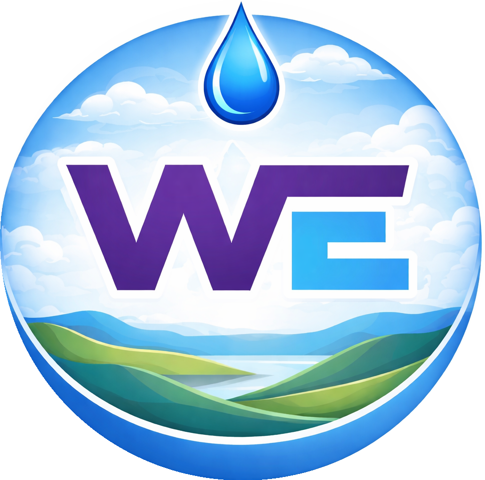

Watech Engineering (UPJN) LLPUrban & Rural Water Supply, Planning, Design & Execution
Sewerage Network, STP Design & Execution
Drainage, Flood Control Systems Design & Execution
Residential, Commercial Structural Design & Execution
Watech Engineering (UPJN) LLP was Co-founded by India's two leading women business tycoons Mrs. Lakshmi & Mrs. Rashmi belonging from Kanpur city of Uttar Pradesh in 2025 with cordially support of Mr. Om Prakash, Miss. Pragati, Mrs. Shailja. We are An ISO 9001:2015 & 14001:2015 Certified Company Specialist in All types of Water Supply Works ( like Intake Well, WTP, CWR, OHT, PH etc.), All types of Sewerage Works (like Trunk line Laying, Construction of STP, IPS, MPS etc.), Construction of All types of Storm Water Drainage System, RO Water Management Sollution Works & All types of Govt. Order Supplier. Watech Engineering (UPJN) LLPis a trusted and performance-driven consultancy and construction company delivering advanced, sustainable and cost-effective water management solutions across India. We providing complete end-to-end services from concept to commissioning. Our expertise covers survey, planning, detailed engineering design, DPR preparation, tender support, project management and full-scale on-site execution. Backed by a team of experienced engineers and technical professionals, we are committed to delivering every project with the highest standards of quality, safety and timely completion. Watech Engineering (UPJN) LLP actively participating in tenders across the India and executing infrastructure projects with precision and accountability. Our core mission is to create smart, reliable and future-ready water systems that support sustainable development with a strong focus on innovation, transparency and 100% Client Satisfaction.
Our mission is to design and deliver reliable, innovative and sustainable water infrastructure solutions that enhance quality of life and protect the environment. We are committed to providing end-to-end consultancy and construction services in Water Supply, Wastewater, Storm Water and RO Water Management with the highest standards of quality, safety and efficiency. Through technical excellence, transparency and timely execution, we aim to create long-term value for our clients, partners and society.
Our vision is to become one of India’s most trusted and leading water infrastructure and management companies, recognized for engineering excellence, integrity and sustainable practices. We strive to set new benchmarks in water and wastewater solutions by adopting modern technologies, smart systems and eco-friendly designs. Through continuous innovation and growth, we aim to contribute to a water-secure and sustainable future for India.
Phone: 9559222140
E-mail: watechengineering@gmail.com
Website: https://watechengineering.pages.dev
GSTIN: 09AAFFW4365H1ZT
LLPIN: ACS-7436
H.O. Address: 200/2, Yogendra Vihar, Khadepur, Near Shri Ram Palace Guest House, 80 Feet Karrahi Main Road, Kanpur Nagar - 208027